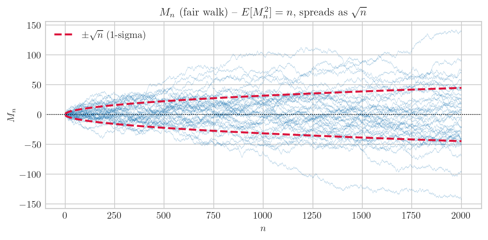
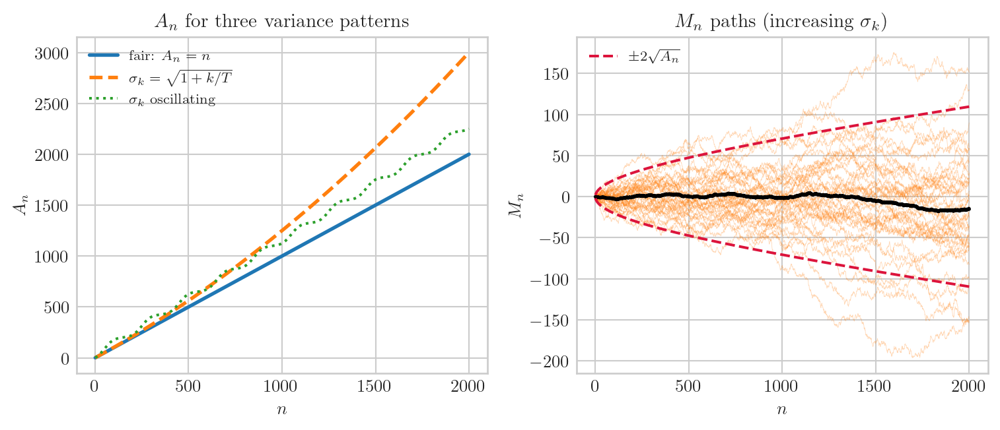
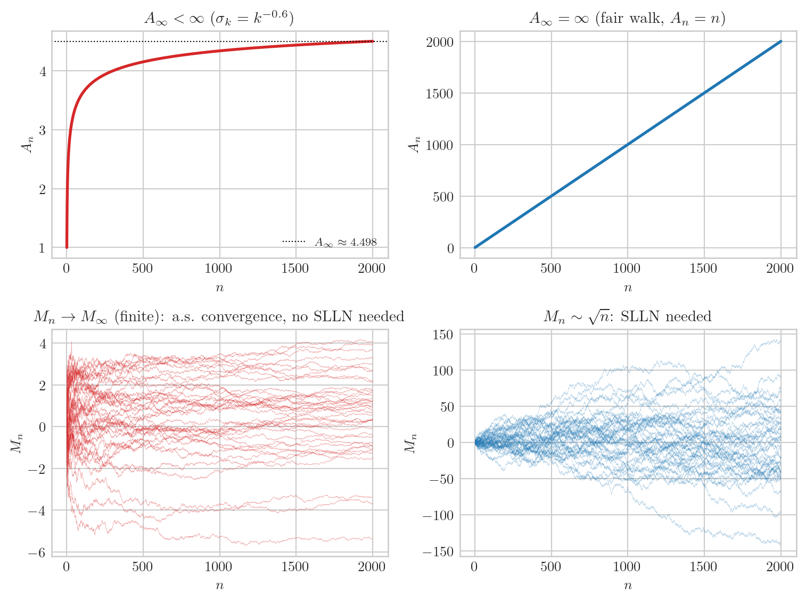
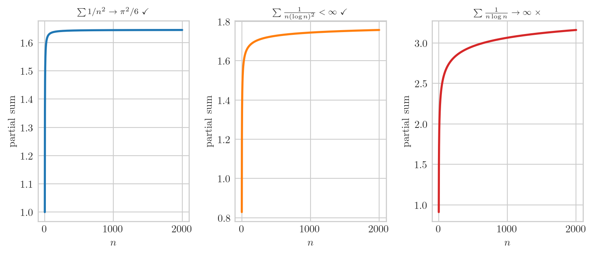
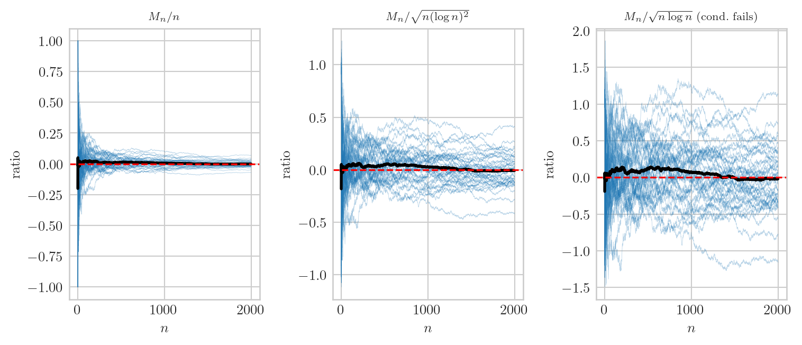
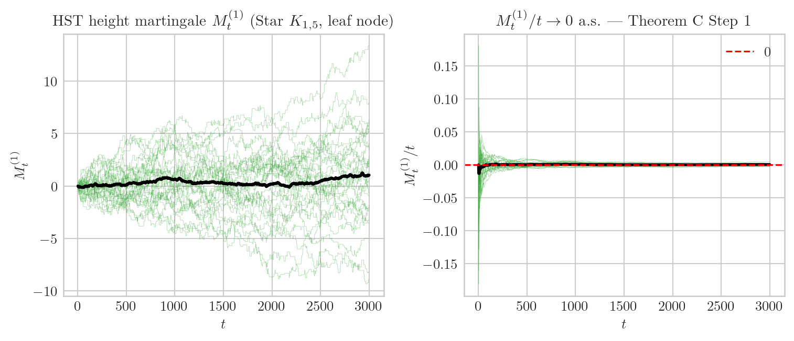

import numpy as np
import matplotlib.pyplot as plt
plt.style.use("seaborn-v0_8-whitegrid")
plt.rcParams.update({
"text.usetex": True,
"text.latex.preamble": r"\usepackage{amsmath,amssymb}",
"font.family": "serif",
"font.size": 10,
"axes.titlesize": 11,
"axes.labelsize": 10,
})
rng = np.random.default_rng(20260523)
NPATH = 40
T = 2000책공부 ▷ HST ▷ 마팅게일 SLLN 원형 — 기호 하나씩, 팟캐스트로
(스튜디오. 화면에 Lemma 8 카드 한 장이 걸려 있다. H 가 카드의 첫 기호를 손으로 짚는다.)
H. 오늘은 이 Lemma 8 한 장을 기호 하나씩 분해할 거예요. \(\{M_n\}_{n \geq 0}\), \(A_n\), \(A_\infty = \infty\), \(f(A_n)\), 수렴 조건 — 전부 다요.
G. 기호가 많아 보이는데 실제로는 뭘 말하는 건가요?
H. 핵심만 보면 이거예요: 마팅게일을 “얼마나 자랐는가”로 나누면 0이 된다. \(A_n\) 이 “누적 변동 에너지” 고, \(f(A_n)\) 은 그걸 조금 키운 분모예요. 코드 설정 먼저.
에피소드 1: \(\{M_n\}_{n \geq 0}\) — square-integrable martingale
H. 첫 기호. square-integrable martingale 은 두 조건이에요.
\[E[M_n \mid \mathcal F_{n-1}] = M_{n-1} \qquad \text{(martingale)}\]
\[E[M_n^2] < \infty \qquad \text{(square-integrable)}\]
G. 두 번째 조건이 왜 추가로 필요한가요?
H. \(A_n\) 정의에 \(E[(M_k - M_{k-1})^2]\) 가 등장해요. 이게 유한해야 \(A_n\) 이 잘 정의돼요. fair walk 으로 확인해볼게요.
eps = rng.choice([-1.0, 1.0], size=(NPATH, T))
M_fair = np.cumsum(eps, axis=1)
n_check = [10, 100, 500, 1000, 2000]
print(f"{'n':>6} {'E[M_n^2]':>10} {'theory (= n)':>12}")
print("-" * 34)
for nv in n_check:
em2 = (M_fair[:, nv - 1] ** 2).mean()
print(f"{nv:6d} {em2:10.1f} {nv:12d}") n E[M_n^2] theory (= n)
----------------------------------
10 9.0 10
100 97.0 100
500 411.1 500
1000 1357.0 1000
2000 2779.6 2000G. \(E[M_n^2] \approx n\) 정확하네요.
H. fair walk 에서 \(E[M_n^2] = n\) 이 정확히 성립해요. 증분 \(\epsilon_k \in \{-1,+1\}\) 이 independent 라 교차항이 0, \(E[\epsilon_k^2] = 1\) 이라 합이 \(n\).
n_arr = np.arange(1, T + 1, dtype=float)
fig, ax = plt.subplots(figsize=(7, 3.5))
for k in range(NPATH):
ax.plot(n_arr, M_fair[k], lw=0.3, alpha=0.35, color="C0")
ax.plot(n_arr, np.sqrt(n_arr), lw=2, color="crimson", ls="--",
label=r"$\pm\sqrt{n}$ (1-sigma)")
ax.plot(n_arr, -np.sqrt(n_arr), lw=2, color="crimson", ls="--")
ax.axhline(0, color="k", lw=0.8, ls=":")
ax.set_title(r"$M_n$ (fair walk) -- $E[M_n^2] = n$, spreads as $\sqrt{n}$")
ax.set_xlabel(r"$n$"); ax.set_ylabel(r"$M_n$"); ax.legend()
plt.tight_layout(); plt.show()
G. 퍼지긴 하는데 \(\sqrt{n}\) 봉투 안에 들어 있네요.
에피소드 2: \(A_n\) — predictable quadratic variation
H. 핵심 기호예요.
\[A_n \;:=\; \sum_{k=1}^{n} \mathbb{E}\!\bigl[(M_k - M_{k-1})^2 \;\big|\; \mathcal{F}_{k-1}\bigr]\]
두 포인트. 첫째: 조건부 기댓값이에요. 둘째: \(A_n \in \mathcal{F}_{n-1}\) — \(n\) 번째 step 을 보기 전에 이미 알 수 있어서 predictable 이라고 불러요.
G. \(\mathcal F_{k-1}\) 에 조건부라는 게 실제로 뭘 바꾸나요?
H. “지금까지 일어난 일을 다 알고 있을 때, 다음 step 의 분산을 미리 계산한다” 는 뜻이에요. fair walk 에서 \(\epsilon_k\) 가 \(\mathcal F_{k-1}\) 과 독립이라
\[\mathbb{E}[\epsilon_k^2 \mid \mathcal{F}_{k-1}] = \mathbb{E}[\epsilon_k^2] = 1\]
상수예요. 그러면 \(A_n = \sum_{k=1}^n 1 = n\) 정확히.
G. 분산이 경로에 따라 달라지면요?
H. \(M_k - M_{k-1} = \sigma_k \cdot \epsilon_k\) 이고 \(\sigma_k\) 가 \(\mathcal F_{k-1}\)-measurable 이면 (predictable) \(A_n = \sum \sigma_k^2\). 세 패턴 비교해 볼게요.
k_arr = np.arange(1, T + 1, dtype=float)
# fair walk
A_fair = k_arr.copy()
# σ_k 가 증가하는 케이스
sigma_inc = np.sqrt(1.0 + k_arr / T)
A_inc = np.cumsum(sigma_inc ** 2)
M_inc = np.cumsum(sigma_inc[None, :] * rng.standard_normal((NPATH, T)), axis=1)
# σ_k 가 진동하는 케이스
sigma_osc = 1.0 + 0.5 * np.sin(2 * np.pi * k_arr / 200)
A_osc = np.cumsum(sigma_osc ** 2)
fig, axes = plt.subplots(1, 2, figsize=(8, 3.5))
axes[0].plot(k_arr, A_fair, lw=2, label=r"fair: $A_n = n$")
axes[0].plot(k_arr, A_inc, lw=2, ls="--", label=r"$\sigma_k = \sqrt{1+k/T}$", color="C1")
axes[0].plot(k_arr, A_osc, lw=1.5, ls=":",label=r"$\sigma_k$ oscillating", color="C2")
axes[0].set_title(r"$A_n$ for three variance patterns")
axes[0].set_xlabel(r"$n$"); axes[0].set_ylabel(r"$A_n$"); axes[0].legend(fontsize=8)
for k in range(NPATH):
axes[1].plot(k_arr, M_inc[k], lw=0.3, alpha=0.3, color="C1")
axes[1].plot(k_arr, M_inc.mean(0), lw=2, color="k")
axes[1].plot(k_arr, 2 * np.sqrt(A_inc), lw=1.5, color="crimson", ls="--",
label=r"$\pm 2\sqrt{A_n}$")
axes[1].plot(k_arr, -2 * np.sqrt(A_inc), lw=1.5, color="crimson", ls="--")
axes[1].set_title(r"$M_n$ paths (increasing $\sigma_k$)")
axes[1].set_xlabel(r"$n$"); axes[1].set_ylabel(r"$M_n$"); axes[1].legend(fontsize=8)
plt.tight_layout(); plt.show()
G. \(A_n\) 이 그 마팅게일의 누적 에너지 같은 거군요.
H. 정확히 그 말이에요. SLLN 에서 분모의 출발점이 여기예요.
에피소드 3: \(A_\infty = \infty\) — 조건이 왜 필요한가
H. 세 번째. \(A_\infty := \lim_{n \to \infty} A_n = \infty\) a.s. 이 조건이 없으면 SLLN 이 의미 없어요.
G. \(A_\infty < \infty\) 면 어떻게 되나요?
H. 그 경우엔 \(M_n\) 자체가 유한한 랜덤 변수로 a.s. 수렴해요. \(M_n / n \to 0\) 은 자동으로 따라오지만 — 유한한 수열을 \(n\) 으로 나누면 당연히 0 이니까 — SLLN 이라 부를 만한 내용이 아니에요.
# σ_k = k^{-0.6} → Σ σ_k^2 = Σ k^{-1.2} 수렴
sigma_conv = k_arr ** (-0.6)
A_conv = np.cumsum(sigma_conv ** 2)
M_conv = np.cumsum(sigma_conv[None, :] * rng.standard_normal((NPATH, T)), axis=1)
print("A_n (마지막 5개) -- σ_k = k^{-0.6}:")
print(np.round(A_conv[-5:], 4))
print(f"\nfair walk A_n (마지막 5개): {A_fair[-5:].astype(int)}")A_n (마지막 5개) -- σ_k = k^{-0.6}:
[4.4978 4.4979 4.4981 4.4982 4.4983]
fair walk A_n (마지막 5개): [1996 1997 1998 1999 2000]fig, axes = plt.subplots(2, 2, figsize=(8, 6))
axes[0, 0].plot(k_arr, A_conv, color="C3", lw=2)
axes[0, 0].axhline(A_conv[-1], color="k", lw=0.8, ls=":",
label=rf"$A_\infty \approx {A_conv[-1]:.3f}$")
axes[0, 0].set_title(r"$A_\infty < \infty$ ($\sigma_k = k^{-0.6}$)")
axes[0, 0].set_xlabel(r"$n$"); axes[0, 0].set_ylabel(r"$A_n$")
axes[0, 0].legend(fontsize=8)
axes[0, 1].plot(k_arr, A_fair, color="C0", lw=2)
axes[0, 1].set_title(r"$A_\infty = \infty$ (fair walk, $A_n = n$)")
axes[0, 1].set_xlabel(r"$n$"); axes[0, 1].set_ylabel(r"$A_n$")
for k in range(NPATH):
axes[1, 0].plot(k_arr, M_conv[k], lw=0.3, alpha=0.4, color="C3")
axes[1, 0].set_title(r"$M_n \to M_\infty$ (finite): a.s. convergence, no SLLN needed")
axes[1, 0].set_xlabel(r"$n$"); axes[1, 0].set_ylabel(r"$M_n$")
for k in range(NPATH):
axes[1, 1].plot(k_arr, M_fair[k], lw=0.3, alpha=0.3, color="C0")
axes[1, 1].set_title(r"$M_n \sim \sqrt{n}$: SLLN needed")
axes[1, 1].set_xlabel(r"$n$"); axes[1, 1].set_ylabel(r"$M_n$")
plt.tight_layout(); plt.show()
G. 왼쪽은 \(M_n\) 이 어딘가로 수렴해 버리는데, 오른쪽은 계속 퍼지네요.
H. \(A_\infty = \infty\) 가 “게임이 계속 실질적으로 진행된다” 는 보장이에요. 그 조건 아래에서만 SLLN 이 의미 있어요.
에피소드 4: \(f(A_n)\) 선택과 수렴 조건
H. 네 번째. \(\{f(A_n)\}\) 은 non-decreasing predictable 수열 — 증가함수 \(f\) 에 \(A_n\) 을 대입한 것. 조건이 하나 붙어요:
\[\sum_{n} \frac{\mathbb{E}\!\bigl[(M_n - M_{n-1})^2\bigr]}{f(A_n)^2} \;<\; \infty\]
G. 이 조건이 왜 필요한가요?
H. 보조 마팅게일 \(Y_n := \sum_{k=1}^n \frac{M_k - M_{k-1}}{f(A_k)}\) 을 만들어요. 이 \(Y_n\) 의 quadratic variation 이 바로 저 합이에요. 유한해야 \(Y_n\) 이 a.s. 수렴하고, 그 수렴에 Kronecker lemma 를 얹어서 \(M_n/f(A_n) \to 0\) 을 꺼내요.
G. \(f\) 를 어떻게 골라야 하나요?
H. fair walk 에서 \(A_n = n\), \(E[\Delta M_k^2] = 1\) 이라 조건이 \(\sum_n 1/f(n)^2 < \infty\) 예요.
- \(f(t) = t\) \(\;\Rightarrow\;\) \(\sum 1/n^2 = \pi^2/6 < \infty\) ✓ \(\;\Rightarrow\;\) \(M_n/n \to 0\)
- \(f(t) = \sqrt{t(\log t)^2}\) \(\;\Rightarrow\;\) \(\sum 1/(n(\log n)^2) < \infty\) ✓ \(\;\Rightarrow\;\) 더 약한 나눗셈도 OK
- \(f(t) = \sqrt{t \log t}\) \(\;\Rightarrow\;\) \(\sum 1/(n \log n) = \infty\) \(\times\) \(\;\Rightarrow\;\) 조건 불충족
f_t = k_arr.copy() # f(t) = t
f_ll2 = np.sqrt(k_arr * (np.log(k_arr + 2)) ** 2) # f(t) = sqrt(t (log t)^2)
f_ll = np.sqrt(k_arr * np.log(k_arr + 2)) # f(t) = sqrt(t log t)
ps_t = np.cumsum(1.0 / f_t ** 2)
ps_ll2 = np.cumsum(1.0 / f_ll2 ** 2)
ps_ll = np.cumsum(1.0 / f_ll ** 2)
print(f"f(t) = t : partial sum (n={T}) = {ps_t[-1]:.5f} "
f"(theory π²/6 = {np.pi**2/6:.5f})")
print(f"f(t) = sqrt(t(logt)²): partial sum (n={T}) = {ps_ll2[-1]:.5f}")
print(f"f(t) = sqrt(t logt) : partial sum (n={T}) = {ps_ll[-1]:.5f} (diverges)")f(t) = t : partial sum (n=2000) = 1.64443 (theory π²/6 = 1.64493)
f(t) = sqrt(t(logt)²): partial sum (n=2000) = 1.75645
f(t) = sqrt(t logt) : partial sum (n=2000) = 3.16100 (diverges)fig, axes = plt.subplots(1, 3, figsize=(8, 3.5))
data = [
(ps_t, "C0", r"$\sum 1/n^2 \to \pi^2/6$ $\checkmark$"),
(ps_ll2, "C1", r"$\sum \frac{1}{n(\log n)^2} < \infty$ $\checkmark$"),
(ps_ll, "C3", r"$\sum \frac{1}{n \log n} \to \infty$ $\times$"),
]
for ax, (ps, color, label) in zip(axes, data):
ax.plot(k_arr, ps, lw=2, color=color)
ax.set_title(label, fontsize=8)
ax.set_xlabel(r"$n$"); ax.set_ylabel("partial sum")
plt.tight_layout(); plt.show()
G. \(f(t) = \sqrt{t \log t}\) 는 아슬아슬하게 발산하는군요.
H. \(\int_2^\infty dt/(t \log t) = \infty\) — 이중 로그 발산이에요. 반면 \(\int dt/(t(\log t)^2)\) 는 수렴. 선택 기준은 항상 이 적분의 수렴 여부예요.
에피소드 5: \(M_n / f(A_n) \to 0\) — 시뮬 + HST 연결
H. 이제 다 모였어요. 결론:
\[\frac{M_n}{f(A_n)} \;\xrightarrow{n \to \infty}\; 0 \quad \text{a.s.}\]
특히 bounded-increment 마팅게일에서 \(A_n \sim cn\) 이면 \(f(A_n) = n\) 으로 두면 \(M_n/n \to 0\) a.s.
G. 세 가지 \(f\) 선택에서 어떻게 다른지 볼 수 있나요?
H. 볼게요. \(f\) 가 작을수록 더 강한 결론이에요 — 더 천천히 나눠도 0 이 된다.
ratio_t = M_fair / f_t[None, :]
ratio_ll2 = M_fair / f_ll2[None, :]
# f_ll 은 조건 안 채우지만 경험적으로 어떻게 보이는지 함께
ratio_ll = M_fair / f_ll[None, :]
fig, axes = plt.subplots(1, 3, figsize=(8, 3.5))
pairs = [(ratio_t, r"$M_n/n$"),
(ratio_ll2, r"$M_n/\sqrt{n(\log n)^2}$"),
(ratio_ll, r"$M_n/\sqrt{n\log n}$ (cond.\ fails)")]
for ax, (ratio, label) in zip(axes, pairs):
for k in range(NPATH):
ax.plot(k_arr, ratio[k], lw=0.3, alpha=0.3, color="C0")
ax.plot(k_arr, ratio.mean(0), lw=2, color="k")
ax.axhline(0, color="r", lw=1.2, ls="--")
ax.set_title(label, fontsize=8)
ax.set_xlabel(r"$n$"); ax.set_ylabel(r"ratio")
plt.tight_layout(); plt.show()
G. 셋 다 0 으로 가네요. \(f\) 가 작을수록 수렴이 느리지만 그래도 0.
H. 맞아요. 이제 HST 와 연결할게요. Height martingale 을 기억해봐요:
\[M_t^{(i)} := \sum_{s=1}^{t} (b'_s - \bar b) \cdot \mathbf{1}\{X_s = v_i\}\]
여기서 \(A_t = \mathrm{Var}(b') \cdot \sum_{s=1}^t \mathbf{1}\{X_s = v_i\} = \frac{b^2}{12} \cdot t \cdot \rho_i(t) \;\sim\; \frac{b^2 \rho_i}{12} \cdot t\). \(A_\infty = \infty\) ✓, \(f(A_t) = t\) 로 두면 \(M_t^{(i)}/t \to 0\) a.s. — Theorem C Step 1 의 한 줄 요약이에요.
# Star K_{1,5} 위 height martingale 시뮬
N_NODE = 5
T_hst = 3000
b_bar = 0.5
var_b = 1.0 / 12.0
NPATH2 = 30
rng2 = np.random.default_rng(42)
def star_walk(n_node, T, rng):
pos = np.zeros(T, dtype=int)
for t in range(1, T):
pos[t] = rng.integers(1, n_node + 1) if pos[t-1] == 0 else 0
return pos
target = 1
M_hst = np.zeros((NPATH2, T_hst))
for p in range(NPATH2):
pos = star_walk(N_NODE, T_hst, rng2)
b_prime = rng2.uniform(0, 1, T_hst)
ind = (pos == target).astype(float)
M_hst[p] = np.cumsum((b_prime - b_bar) * ind)
t_arr = np.arange(1, T_hst + 1, dtype=float)
ratio_hst = M_hst / t_arr[None, :]
fig, axes = plt.subplots(1, 2, figsize=(8, 3.5))
for k in range(NPATH2):
axes[0].plot(t_arr, M_hst[k], lw=0.3, alpha=0.4, color="C2")
axes[0].plot(t_arr, M_hst.mean(0), lw=2, color="k")
axes[0].set_title(r"HST height martingale $M_t^{(1)}$ (Star $K_{1,5}$, leaf node)")
axes[0].set_xlabel(r"$t$"); axes[0].set_ylabel(r"$M_t^{(1)}$")
for k in range(NPATH2):
axes[1].plot(t_arr, ratio_hst[k], lw=0.3, alpha=0.4, color="C2")
axes[1].plot(t_arr, ratio_hst.mean(0), lw=2, color="k")
axes[1].axhline(0, color="r", lw=1.2, ls="--", label=r"0")
axes[1].set_title(r"$M_t^{(1)}/t \to 0$ a.s. --- Theorem C Step 1")
axes[1].set_xlabel(r"$t$"); axes[1].set_ylabel(r"$M_t^{(1)}/t$"); axes[1].legend()
plt.tight_layout(); plt.show()
G. 오른쪽이 0 으로 수렴하는 게 보여요. 이게 Theorem C 의 첫 단계였군요.
H. 네. Lemma 8 은 이 한 줄 — \(M_t^{(i)}/t \to 0\) — 을 엄밀하게 보장하는 도구예요. 기호별로 요약하면:
- \(\{M_n\}\): square-integrable 인지 확인 (\(E[M_n^2] < \infty\))
- \(A_n\): “누적 변동 에너지” — predictable 하게 한 발 앞에서 알 수 있는 값
- \(A_\infty = \infty\): 게임이 실질적으로 계속 진행됨
- \(f(A_n)\): 나눌 분모 — 수렴 조건만 채우면 자유롭게 선택
- 결론: 그 분모로 나누면 0
G. 기호가 많아 보였는데 사실은 이 이야기를 정밀하게 쓴 것이었네요.
H. 바로 그게 수학 기호의 역할이에요.